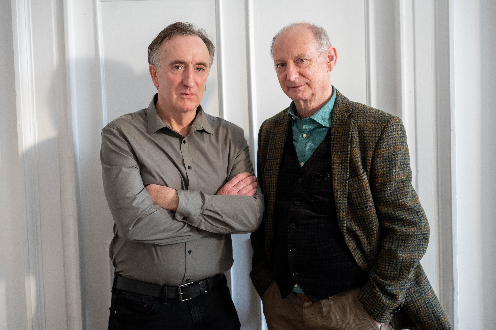

Production Gallery

 OF MORNINGTON photo by Sasha Bratkova.jpg)


DIRECTOR’S NOTES
Of Mornington by Billy Roche
We tell ourselves stories to survive. Stories about who we were, who we are, and who we might still become. Of Mornington lives in the space between those stories — and the truth.
This is a play about belief, identity, and the quiet, stubborn need for connection. However self-contained we appear, we are not built to endure alone. We need other people — to witness us, to challenge us, to keep us from disappearing into our own myths.
Set in a small-town café, three lives collide at a moment of reckoning...
Peter McCamley.


Writers notes
‘That play is not earning its keep,’ my mother once said to me...
Billy Roche.
April 2026.
Cast & Creatives
Gary Lydon
James Doherty O’Brien

Síofra O’Meara

Peter McCamley
Links
Crew Credits
Stage Manager — Carol Stacey
Set Design — Mark Redmond
Lighting Design — Cian Redmond
Sound Design — Terry Byrne
Costume design — Aileen Donohoe
Communications — Elizabeth Rose Browne
Photography — Sasha Bratkova
With thanks to
Eoin Colfer
Councillor Lisa McDonald
Fitzgeralds Menswear Wexford
Councillor Catherine ‘Biddy’ Walsh